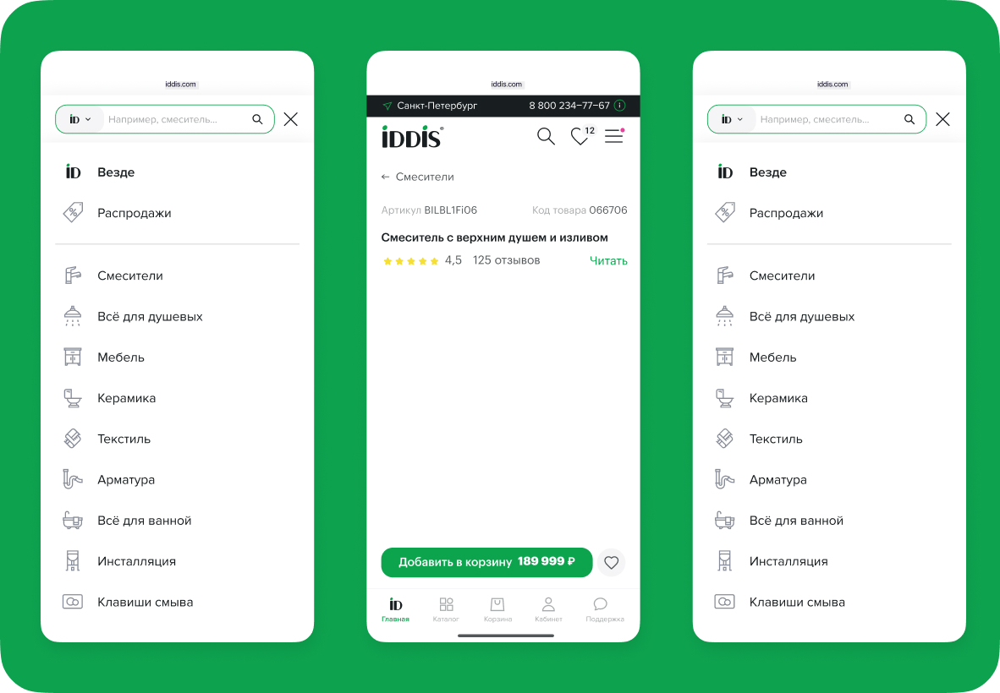

Как и зачем проводить юзабилити-тестирования

Это очередная статья про ю-тесты. Рассказываем, что это такое, зачем они нужны и как их проводить
Зачем нужны юзабилити-тесты
Проблемы в интерфейсе становятся препятствием для пользователей. Из-за этого снижаются конверсии и прибыль, конкурентоспособность продукта падает. Чтобы перестать смотреть на скудные метрики и восклицать: «Ну почему пользователи отваливаются на этом пути?», можно провести ю-тесты и увидеть самим.
Юзабилити-тесты помогают
- Найти ошибки в интерфейсе
- Понять последовательность пользовательских шагов
- Проверить, насколько интерфейс понятен пользователю
- Узнать, почему пользователи покидают сайт или приложение
Для чего нужны ю-тесты
Виды юзабилити-тестов
Неискушённого представителя бизнеса можно отпугнуть словом «юзабилити-тест». Кажется, что ЭТО нужно делать исключительно в лабораториях под присмотром исследователей в белых халатах. Исследователь приглашает респондента в кабинет, надевает ему айтрекер для контроля за движением глаз. Хорошо бы подключить электроды прямо к коре мозга. Тут-то вся правда жизни и обнажается. К счастью, всё не так сложно.
Юзабилити тесты бывают разные
- Очные — по учебнику их нужно проводить в UX-лабораториях, но если у вас такой нет, подойдёт любое помещение. Суть очного теста — личное присутствие исследователя и респондента на одой территории. До пандемии казалось, что нормальные ю-тесты можно делать только так.
- Удалённые — респондент и исследователь просто созваниваются и делают всё то же самое, что и положено в UX-лаборатории. Принципиальной разницы нет, если у всех включены фронтальные камеры и можно считывать невербалику.
- Модерируемые — когда исследователь следит за действиями и реакцией респондента, задаёт дополнительные вопросы.
- Немодерируемые — пользователь самостоятельно выполняет задачи, которые ему предлагает специальный сервис. Либо просто идёт по написанному сценарию. Платформа записывает экран и комментарии респондента.
- Качественные — такие тестирования показывают, как люди пользуются продуктом, как его оценивают и чего им не хватает.
- Количественные — собирают показатели и метрики — сколько людей справилось с задачей и какое время потратили на неё.
5 шагов юзабилити-тестирования
Бриф
Чтобы сформулировать цель исследования, собирают бриф у заказчика. Вернее, бриф должен быть сформирован ещё до того, как все стороны поняли, что нужно проводить именно ю-тест. Сначала формулируем цели и гипотезы, только потом выбираем метод исследования. Не перепутайте.
Заказчик рассказывает об особенностях продукта, проблемах, делится гипотезами и посвящает исследователя в бизнес-цели. После этого собирают все сопутствующие данные: посещаемость сервиса, конверсии, сегменты аудитории.
Дизайн исследования
Этот этап — достаточно творческий процесс и зависит от цели исследования, поэтому все делают его по-разному.
Вступление и вводные вопросы
- Представьтесь. Расскажите, кто вы и зачем будете пытаться человека полчаса−час. Чтобы расположить респондента к себе, начните с небольшого отступления — спросите о работе, увлечениях, настроении человека. Но не увлекайтесь, это только вступление.
- Проведите инструктаж. Расскажите, что предстоит сделать респонденту. Не забывайте про страх ошибок. Объясните, что вы тестируете продукт, а не умственные навыки. Если человек не понимает, как работает сервис — это не его ошибка, а проектировщиков.
- Предупреждайте о записи разговора и экрана. Поясните, как долго они будут храниться. Проговорите, что данные респондента будут распространяться обезличенно
- Задайте скрининговые вопросы. Спросите про контекст и опыт использования продукта. Так вы ещё раз проверите, подходит ли пользователь под заявленные критерии.
Задачи для тестирования
На первый взгляд, задачи формулируются просто: «Вам нужно сделать действие N. Давайте попробуем выполнить это задание».
Но на практике появляется много нюансов. Например, в юзабилити-тестах для IKEA модераторы поставили задачу — найти книжный шкаф. Внезапно, но пользователи просто заходили в окно поиска и набирали «Книжный шкаф». Никаких данных собрать не удалось, кроме того, что люди хорошо понимают прямые команды.
Чтобы исправить положение, исследователи добавили жизненный контекст: «У вас более ста книг разбросано по всей квартире. Найдите способ организовать их». Участники действовали по-разному: искали в категориях, вводили в поиск запросы «решения для хранения» или «полки». «Книжный шкаф» мелькал крайне редко. Эта задача дала релевантные результаты, потому что пользователи действовали естественно и привычно.
плохие задачи
- Содержат текст интерфейса и подсказки.Задача «Добавьте телевизор в избранное» заставит респондента найти кнопку с подписью «Избранное» и нажать на неё. Возможно, он не пользуется этой функцией обычно и только следует вашему указанию.
- Идут по логике интерфейса.«Зайдите в меню, выберите нужную категорию, отсортируйте товары по цене» — это пошаговая инструкция. Она решает за пользователя, куда нажать и перейти.
- Используют нереальные для клиента сценарии и задачи.Пользователь целенаправленно будет искать функцию, если увидит задание «Подпишитесь на новостную рассылку». Так вы не сможете проверить, заметил ли респондент возможность подписки, когда выполнял другие действия.
- Включают непонятную терминологию.Большинство людей не знает интерфейсные термины, например, «тулбар», «дропдаун» и «чекбокс». Поэтому человек не поймёт формулировку «С помощью таббара зайдите в профиль и зарегистрируйтесь».
- Содержат две и более задачи одновременно.«Забронируйте билеты на самые дешёвые даты, заполните анкету, оплатите и расскажите свои впечатления». Пока пользователь ищет билеты, он забудет про следующие этапы — анкету, оплату и впечатление.
- Слишком длинные.Длинные задания сложно запоминать: «Для обновления прогресса в книге, которую читаете, перейдите в приложение, найдите там книгу, добавьте её в свой список и обновите достигнутый прогресс». К тому же непонятно, как обновить процесс, как добавить книгу в свой список.
- Наводят на проблемное место.Задание «Зайдите на главную страницу. Можете ли вы найти специальные предложения» уже подразумевает, что с действием могут возникнуть сложности.
Выходные вопросы
В этой части исследователь закрепляет, насколько человеку запомнился интерфейс и понял ли он, что вообще происходило. Примеры выходных вопросов:
«Спасибо, по задачам мы закончили. Расскажите ваше общее впечатление о сайте?»
«Какой вариант вам понравился больше всего и почему?»
«Есть ли что-то, по вашему мнению, чего не хватает на этом сайте?»
«Если бы вы описали этот сайт одному или двум знакомым, как бы вы это сделали?»
«Есть ли у вас другие комментарии и вопросы?»
Бест практис для интервьюеров
- Готовьте все инструкции для респондента заранее. Расскажите, как подключиться, проверить микрофон и поделиться экраном. Проверьте свою камеру и звук. Не забудьте зарядить перед интервью необходимую технику — наушники, микрофон и ноутбук.
- Просите человека комментировать все свои действия. Это даст вам возможность проанализировать логику аудитории и сразу уточнить интересующую информацию без стеснения.
Бонус
Подготовили маленький гайд, который поможет правильно отреагировать в особых ситуациях. Пользуйтесь, но только без пассивной агрессии.
Совет
Проведите пробное тестирование на коллегах. Это поможет избежать текстовых ошибок в вопросах и заданиях. Также вы поверите, хватает ли вам выделенного времени на тестирование.
На сегодня всё Подписывайтесь на нашу рассылку, если было полезно. Также мы принимаем фидбек о контенте на почту pr@antro.cx
Ещё у нас есть телеграм-канал «Счастье пользователя», где мы вещаем, как изучать аудиторию и проектировать решения на благо людей.